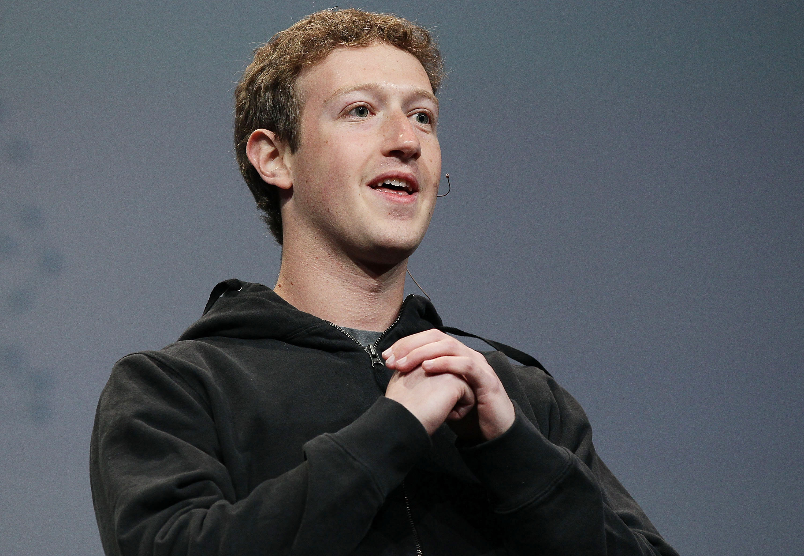

Mark Zuckerberg
The youngest self-made billionaire in history

Facebook founder Mark Zuckerberg, during a keynote address at a 2010 conference in San Francisco.
Here's a timeline of Mark Zuckerberg's life:
- 1984 - Born in White Plains, New York, the only son of a dentist and psychiatrist (he has three sisters).
- 2002 - Graduates from Phillips Exeter Academy, a private school in New Hampshire; joins Harvard University in autumn on a psychology and computer science course.
- 2003 - Launches Facemash - a web programme enabling Harvard students to compare images of same-gender students and rate the more attractive - and nearly gets kicked out when its immediate popularity draws the attention of the university administrators.
- 2004 - Starts Thefacebook.com in February.
- 2004 - Drops out of Harvard at the end of his sophomore year; moves to Palo Alto that summer, where he rents a house with a now-famous swimming pool (and zip-wire).
- 2004 - Facebook hits 200,000 users; contacts venture capitalists in Silicon Valley, and receives an initial investment of half a million dollars - some of which is used to splash out on a small office above a Chinese restaurant.
- 2004 - The Winklevoss twins file a lawsuit against Zuckerberg claiming he ripped off their idea for a new social network, HarvardConnection (later ConnectU).
- 2005 - Facebook hits 5 million users.
- 2006 - At 22 years of age, Zuckerberg turns down an estimated $1 billion dollar offer for Facebook from Yahoo.
- 2007 - Opens Facebook beyond universities so anyone with an email address can join; turns down a $15 billion offer from Microsoft, which would have bagged him personally $4 billion.
- 2007 - Allows independent developers to write programmes for Facebook; but is forced to apologise when Beacon, a controversial new addition to Facebook allowing users to view what their friends have been buying online, raises major complaints over privacy intrusion.
- 2008 - Reaches a settlement with Winklevoss lawsuit worth $65 million, though still denies any intellectual property theft.
- 2009 - China blocks domestic access to Facebook.
- 2010 - Named Time magazine’s person of the year.
- 2010 - Hollywood movie The Social Network is released documenting Zuckerberg's time at Harvard and the early days of Facebook.
- 2011 - Appears on Saturday Night Live along with host Jesse Eisenberg, who played him in the film.
- 2011 - Facebook records half a billion users on Facebook in a single day, and is expected to report $4 billion dollars revenue, double that of the previous year.
- 2012 - Facebook projected to reach 1 billion users; a much-mooted stock market flotation would be expected to earn as much as $100 billion.
- 2013 - The Washington Post reported that Zuckerberg's Facebook profile was hacked by an unemployed web developer.
- 2014 - Zuckerberg was the keynote speaker at the Mobile World Congress (MWC), held in Barcelona, Spain, in March, which was attended by 75,000 delegates.
- 2016 - Business Insider named Zuckerberg one of the "Top 10 Business Visionaries Creating Value for the World" along with Elon Musk and Sal Khan, due to the fact that he and his wife "pledged to give away 99% of their wealth — which is estimated at over $52.1 billion.
A lot of times, I run a thought experiment: 'If I were not at Facebook, what would I be doing to make the world more open?'
__Mark Zuckerberg
For more information, check out his Wikipedia entry.